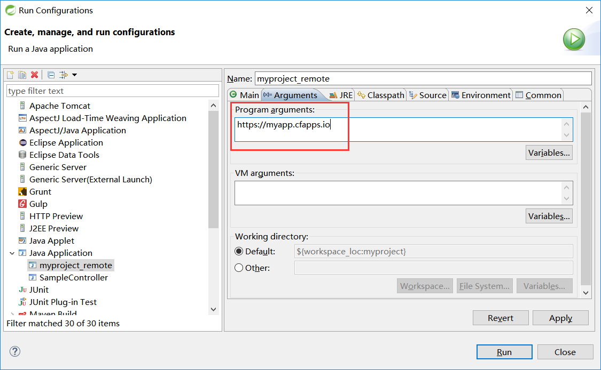

Spring Boot 官方文档学习（一）入门及使用
个人说明：本文内容都是从为知笔记上复制过来的，样式难免走样，以后再修改吧。另外，本文可以看作官方文档的选择性的翻译（大部分），以及个人使用经验及问题。
其他说明：如果对Spring Boot没有概念，请先移步上一篇文章 Spring Boot 学习。本篇原本是为了深入了解下Spring Boot而出现的。
另外，Spring Boot 仍然是基于Spring的，建议在赶完工之后深入学习下Spring，有兴趣可以看看我的 Spring 4 官方文档学习（十一）Web MVC 框架 。欢迎探讨，笑~
目录：
- 内置Servlet Container
- 使用Spring Boot
- 安装Spring Boot CLI
- 开发一个简单的Spring Boot应用--使用最原始的方式
- Dependency Management
- Starters
- 自动配置
- Spring Beans 和 依赖注入（略）
- @SpringBootApplication
- 运行Spring Boot Application
- Developer tools
- 生产打包
Name Servlet Version Java Version Tomcat 8
3.1
Java 7+
Tomcat 7
3.0
Java 6+
Jetty 9.3
3.1
Java 8+
Jetty 9.2
3.1
Java 7+
Jetty 8
3.0
Java 6+
Undertow 1.3
3.1
Java 7+
此外，你仍然可以部署Spring Boot项目到任何兼容Servlet3.0+的容器。
你可以像使用标准的Java库文件一样使用Spring Boot。简单的将需要的 spring-boot-*.jar 添加到classpath即可。
Spring Boot不要求任何特殊的工具集成，所以可以使用任何IDE，甚至文本编辑器。
只是，仍然建议使用build工具：Maven 或 Gradle。
Spring Boot依赖 使用
org.springframework.boot groupId 。 通常，让你的Maven POM文件继承 spring-boot-starter-parent，并声明一个或多个 Starter POMs依赖即可。Spring Boot也提供了一个可选的 Maven Plugin来创建可执行的jars。 如下：

<?xml version="1.0" encoding="UTF-8"?> <project xmlns="http://maven.apache.org/POM/4.0.0" xmlns:xsi="http://www.w3.org/2001/XMLSchema-instance" xsi:schemaLocation="http://maven.apache.org/POM/4.0.0 http://maven.apache.org/xsd/maven-4.0.0.xsd"> <modelVersion>4.0.0</modelVersion> <groupId>com.example</groupId> <artifactId>myproject</artifactId> <version>0.0.1-SNAPSHOT</version> <!-- Inherit defaults from Spring Boot --> <parent> <groupId>org.springframework.boot</groupId> <artifactId>spring-boot-starter-parent</artifactId> <version>1.4.0.RELEASE</version> </parent> <!-- Add typical dependencies for a web application --> <dependencies> <dependency> <groupId>org.springframework.boot</groupId> <artifactId>spring-boot-starter-web</artifactId> </dependency> </dependencies> <!-- Package as an executable jar --> <build> <plugins> <plugin> <groupId>org.springframework.boot</groupId> <artifactId>spring-boot-maven-plugin</artifactId> </plugin> </plugins> </build> </project>
需要注意的是， spring-boot-starter-parent 是一个非常好的方法，但并不适用于所有情况。有时你需要继承其他的POM，或者你不喜欢默认的设置。-- 办法见后面。
这是一个命令行工具，可以执行Groove脚本。是执行一个Spring Boot的最快途径。
-- 好吧，Linux下无敌，Win下还是休息吧。
务必注意：前提是maven + jdk。
2、新建一个pom.xml文件。内容如下：
<?xml version="1.0" encoding="UTF-8"?> <project xmlns="http://maven.apache.org/POM/4.0.0" xmlns:xsi="http://www.w3.org/2001/XMLSchema-instance" xsi:schemaLocation="http://maven.apache.org/POM/4.0.0 http://maven.apache.org/xsd/maven-4.0.0.xsd"> <modelVersion>4.0.0</modelVersion> <groupId>com.example</groupId> <artifactId>myproject</artifactId> <version>0.0.1-SNAPSHOT</version> <parent> <groupId>org.springframework.boot</groupId> <artifactId>spring-boot-starter-parent</artifactId> <version>1.4.0.RELEASE</version> </parent> <!-- Additional lines to be added here... --> </project>
当然，你也可以使用IDE，不过使用文本编辑器会让我们对它更理解。
由于我们已经继承了 spring-boot-starter-parent ，而 spring-boot-starter-parent 又提供了 dependency-management ，所以我们可以忽略被选中依赖的版本。
在添加依赖之前，我们先看一下现在已有什么：mvn dependency:tree。该命令会打印一个当前项目的依赖树。
结果表明，当前没有任何依赖。
OK，现在我们添加一个Starter 模块。
<dependencies> <dependency> <groupId>org.springframework.boot</groupId> <artifactId>spring-boot-starter-web</artifactId> </dependency> </dependencies>
现在再次查看一下依赖树。
可以看出，spring-boot-starter-web 包含了很多内容，spring-webmvc、spring-web、jackson、validation、tomcat、starter。
由于Maven默认编译路径为 src/main/java 下面的源码，所以，默认设置下，需要创建这些文件夹。
然后，编写文件 src/main/java/Example.java：
import org.springframework.boot.*; import org.springframework.boot.autoconfigure.*; import org.springframework.stereotype.*; import org.springframework.web.bind.annotation.*; @RestController @EnableAutoConfiguration public class Example { @RequestMapping("/") String home() { return "Hello World!"; } public static void main(String[] args) throws Exception { SpringApplication.run(Example.class, args); } }
这里我们只需要关心 @EnableAutoConfiguration 即可。这个注解是让Spring Boot猜测 你想怎么配置Spring，但实际上，它是根据你添加到classpath中的依赖来判断的。
注意，自动配置 可以配合 Starter POMs 一起工作，但二者不是捆绑到一起的。你仍然可以将Starter POMs中的依赖单独拣出使用，Spring Boot还是会自动配置。
启动之后就可以访问了，默认地址： http://localhost:8080/
注意，Spring Boot的这种打包方式需要使用Spring Boot提供的 spring-boot-maven-plugin 。
<build> <plugins> <plugin> <groupId>org.springframework.boot</groupId> <artifactId>spring-boot-maven-plugin</artifactId> </plugin> </plugins> </build>
注意，spring-boot-starter-parent POM中包含了 <executions> 的配置信息，绑定了 repackage goal （maven）。如果你不使用parent POM，你需要自己来声明这个配置信息。
现在，可以打包了： mvn package 。
现在，你可以在/target目录下看到 myproject-0.0.1-SNAPSHOT.jar ，大约10 Mb左右。可以通过 jar tvf target/myproject-0.0.1-SNAPSHOT.jar 来查看其中的内容。
此外，在/target目录下，还可以看到 myproject-0.0.1-SNAPSHOT.jar.original ，这是Maven打包出来的---在Spring Boot repackage 之前。
执行 ctrl+c，退出。
每个版本的Spring Boot都提供了一个依赖列表。这个列表包含了你可能通过Spring Boot用到的所有的Spring模块以及第三方库。该列表可以以BOM（Bills of Material）的形式支持Maven。 --- 怎么理解BOM和Starter？什么区别？？
spring-boot-starter-parent project
默认是 Java 1.6。 Resource filtering。exec plugin、surefire、Git commit ID、shade。
Resource filtering for application.properties 和 application.yml，以及，profile-specific file，如application-foo.properties 或 application-foo.yml。
-- 注意Maven filtering使用 @..@ 占位符，你可以在Maven property中覆盖：resource.delimiter。
如果不想使用Spring Boot中的默认版本，可以在<properties>覆盖相应的版本，如，想使用不同版本的Spring Data，具体如下：
<properties> <spring-data-releasetrain.version>Fowler-SR2</spring-data-releasetrain.version> </properties>
想使用不同版本的JDK：
<!-- 使用 java 1.8 --> <java.version>1.8</java.version>
这种情况下，仍然可以使用dependency management，但不能使用plugin management啦。方式如下：
<dependencyManagement> <dependencies> <dependency> <!-- Import dependency management from Spring Boot --> <groupId>org.springframework.boot</groupId> <artifactId>spring-boot-dependencies</artifactId> <version>1.4.0.RELEASE</version> <type>pom</type> <scope>import</scope> </dependency> </dependencies> </dependencyManagement>
注意，scope是 import 。而且，这种情况下，不再允许在<properties>覆盖相应的版本。如果要使用其他版本，需要在上面的前面添加一个完整的dependency。如下：
<dependencyManagement> <dependencies> <!-- Override Spring Data release train provided by Spring Boot --> <dependency> <groupId>org.springframework.data</groupId> <artifactId>spring-data-releasetrain</artifactId> <version>Fowler-SR2</version> <scope>import</scope> <type>pom</type> </dependency> <dependency> <groupId>org.springframework.boot</groupId> <artifactId>spring-boot-dependencies</artifactId> <version>1.4.0.RELEASE</version> <type>pom</type> <scope>import</scope> </dependency> </dependencies> </dependencyManagement>
另外，Spring Boot还提供了一个Maven Plugin：spring-boot-maven-plugin，用于将项目打包成fat jar（executable jar）。
继承时只需要声明一下即可使用：
<build> <plugins> <plugin> <groupId>org.springframework.boot</groupId> <artifactId>spring-boot-maven-plugin</artifactId> </plugin> </plugins> </build>
可以创建自己的Starter，但名字格式不能是 spring-boot-starter-*，而是 *-spring-boot-starter。类似Maven插件的规则。
@Import 和 @ComponentScan 类似；
@EnableAutoConfiguration 和 @SpringBootApplication 类似；---注意，只能使用一次，建议用在primary @Configuration class上。
注意，自动配置永远是第二位的，一旦你配置自己的东西，那自动配置的就会被覆盖。
查看自动配置都配置了什么，以及为什么，启动应用的时候加上 --debug即可。
禁用特定的自动配置：
import org.springframework.boot.autoconfigure.*; import org.springframework.boot.autoconfigure.jdbc.*; import org.springframework.context.annotation.*; @Configuration @EnableAutoConfiguration(exclude={DataSourceAutoConfiguration.class}) public class MyConfiguration { }
如果class不在classpath中，可以使用 excludeName，然后使用全路径即可。
@SpringBootApplication 等同于默认的属性的
@Configuration, @EnableAutoConfiguration and @ComponentScan。 -- 注意，@ComponentScan 不能凭空使用。
需要导入现有Maven项目。
如果不小心运行了两次，出现端口占用问题，STS（Spring Tools Suite）使用Relaunch即可。
java -jar target/xxxx.jar 注意，是在项目路径下执行。
开启远程调试支持：
java -Xdebug -Xrunjdwp:server=y,transport=dt_socket,address=8000,suspend=n -jar target/myproject-0.0.1-SNAPSHOT.jar
因为Spring Boot应用都是简单的Java应用，所以JVM Hot-swapping可以直接使用。但是，JVM Hot-swapping对于能够替换的字节码有些限制，所以建议使用JRebel或者Spring Loaded？？
spring-boot-devtools 模块同样包含了快速重启应用的支持。
另外，貌似JVM Hot-swapping 只能在debug期间修改方法体？？
Spring Boot包含一组附加的开发期工具。
<dependencies> <dependency> <groupId>org.springframework.boot</groupId> <artifactId>spring-boot-devtools</artifactId> <optional>true</optional> </dependency> </dependencies>
注意，生产环境下（java -jar或者通过特定的类加载器启动），这些开发工具自动被禁止。
上面的 <optional>true</optional> 是一个最佳实践，可以有效阻止用于其他模块。
如果想确保生产Build中不包含devtools，可以使用excludeDevtools build property。
一些Spring Boot支持的库使用了cache增进性能。但是cache，在开发过程中可能会是一个阻碍。例如你无法立即更新一个模板（thymeleaf的）。
cache设置通常在 application.properties 中。但是，比起手动设置这些，spring-boot-devtools模块会自动应用这些开发期的设置。
使用spring-boot-devtools模块的应用，当classpath中的文件有改变时，会自动重启！ -- 就是说，默认会监视classpath入口。
静态资源和视图模板不需要重启！
注意，不同的IDE有不同的表现，例如Eclipse中只要改变了文件并保存，那就会导致classpath中的内容改变。而Intellij IDEA则需要 Build #Make Project。
可以通过build plugin启动应用，只要开启了forking支持，因为Devtools需要一个隔离的classloader才能运行正常。Maven下要这样开启：
<build> <plugins> <plugin> <groupId>org.springframework.boot</groupId> <artifactId>spring-boot-maven-plugin</artifactId> <configuration> <fork>true</fork> </configuration> </plugin> </plugins> </build>
注意：在使用LiveReload（热加载）时，自动重启仍然可以正常工作。如果你使用了JRebel，自动重启会被禁用以支持动态类加载。此时，devtools其他方面仍然可以使用。
注意：DevTools在重启过程中依赖应用上下文的shutdown hook来关掉它（应用）。所以如果禁用了shutdown hook，它就无法正常工作了：SpringApplication.setRegisterShutdownHook(false)。
Spring Boot使用的重启技术，实际上是使用了两个类加载器：不变的base类加载器、可变的restart类加载器。前者加载第三方jar之类的。后者加载项目代码。重启的时候，只是丢弃可变的restart类加载器，然后重新创建一个，所以速度比较快。
如果你觉得这样仍然不够快，或者遇到了类加载器问题，那你可以考虑JRebel之类的重加载技术。（重写了类？？）
Spring Loaded项目提供了另一个选择，但是支持的框架不够多，且没有商业支持。
一些特定的资源改变时没有必要引起重启。有一些不会引起重启，但是会重加载。如果你想自定义的设置一下，可以使用 spring.devtools.restart.exclude 属性。如下：
spring.devtools.restart.exclude=static/**,public/**
如果想在默认的设置之外再添加新的排除选项，可以使用 spring.devtools.restart.additional-exclude 属性。
如果想在修改classpath之外的文件时也让应用重启，可以使用 spring.devtools.restart.additional-paths 属性。还可以配合上面提到的 spring.devtools.restart.exclude 属性，来控制是重启还是重加载。
如果不想使用自动重启功能，可以使用 spring.devtools.restart.enabled 属性。多数情况下，可以在 application.properties 中设置，这样仍然会创建一个restart类加载器，但不再监视改变。
如果想完全禁止自动重启，需要在调用 SpringApplication.run(..) 之前设置一个System属性。如下：
public static void main(String[] args) { System.setProperty("spring.devtools.restart.enabled", "false"); SpringApplication.run(MyApp.class, args); }
如果你的IDE会随改随编译，你可能会倾向于只在特定时刻引发重启（否则会很烦人，而且性能下降）。这时，你可以使用“trigger file”，就是一个特定的文件，只有修改这个文件时才会触发重启。使用 spring.devtools.restart.trigger-file 属性即可。（还可以设置为全局属性，这样所有的项目都可以使用了！见十八。）
自定义restart类加载器。
如果有一个多模块项目，只有部分导入到你的IDE中，你可能需要自定义一下。首先创建一个文件：META-INF/spring-devtools.properties。该文件中，可以有以前缀 restart.exclude. 和 restart.include. 开头的属性。前者会被放入base类加载器，后者则被放入restart类加载器。
该属性的value，是正则表达式。例如：
restart.include.companycommonlibs=/mycorp-common-[\\w-]+\.jar
restart.include.projectcommon=/mycorp-myproj-[\\w-]+\.jar
注意，key只要是前缀 restart.exclude. 和 restart.include. 开头即可，后缀任意。
已知限制：
自动重启，在使用 ObjectInputStream 反序列化时，会出问题。如果你想使用反序列化，应该使用Spring的 ConfigurableObjectInputStream 配合 Thread.currentThread().getContextClassLoader() 使用。
可惜的是，一些第三方jars中没有考虑到这个问题，无解。
spring-boot-devtools 模块内置了一个 LiveReload Server，可以保证在改变资源时 浏览的刷新。LiveReload的浏览器扩展，免费支持Chrome、Firefox、Safari。
如果想禁用：spring.devtools.livereload.enabled=false 。
注意：只能运行一个LiveReload Server。如果同时开启多个项目，那只有第一个。
$HOME 文件夹下添加一个文件 .spring-boot-devtools.properties ，该文件中的内容会被作用于所有的Spring Boot项目。例如设置 触发文件：
spring.devtools.reload.trigger-file=.reloadtrigger
Spring Boot 的developer tools也可以在远程使用（应该是使用一部分）。需要开启支持。例如：
spring.devtools.remote.secret=mysecret
问题：值是什么意思？
注意：不要在生产环境下开启！！
远程devtools支持是成对出现的。服务器端+客户端。当设置了上面的属性时，服务器端会自动开启。
运行远程客户端应用：
运行 org.springframework.boot.devtools.RemoteSpringApplication ，需要使用和远程项目相同的classpath！
传递给应用的non-option参数应该是你要连接到的URL。（问题，什么是non-option参数？）
例如，你在使用Eclipse或者STS，有一个项目 my-app ，部署到了Cloud Foundry，那你需要进行如下操作：
Select Run -> Run Configurations...Create a new Java Application "launch configuration"Browse for the my-app projectUse org.springframework.boot.devtools.RemoteSpringApplication as the main class.Add https://myapp.cfapps.io to the Program arguments (or whatever your remote URL is).

代理访问远程的设置方法（略）。p47(60/346)
远程方式下，客户端的任何更新都会被push到服务器端，并按设置触发restart。比较快。
并不总是能开启Java远程调试功能。（直接翻译的，略拗口。其实就是有时候能开启，有时候不能）
为了改进这些限制，devtools支持Http协议的远程调试通道。远程客户端提供了一个本地服务器（默认8000端口，可修改），用于绑定远程调试器。当一个连接被创建时，debug信息就会通过HTTP发送到远程应用。
修改默认端口： spring.devtools.remote.debug.local-port 。
但是，首先，你需要确认远程应用以远程调试方式启动。通常，配置JAVA_OPTS即可达到目的。例如，在Cloud Foundry上，你可以在 manifest.yml 中添加如下信息：
---
env:
JAVA_OPTS: "-Xdebug -Xrunjdwp:server=y,transport=dt_socket,suspend=n"
注意，通过网络进行远程调试，可能很慢，所以你需要增加超时时间。Eclipse中：Java -> Debug -> Debugger timeout (ms)，设成60000很不错。
Executable jars可以直接在生产环境下使用。
其他的生产就绪功能，例如监控等，可以考虑 spring-boot-actuator 。后面会有介绍。